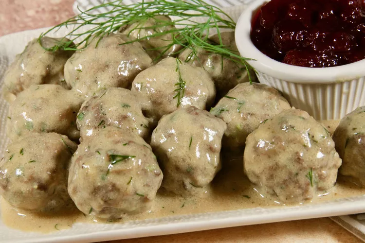

Swedish Meatballs
HOME

Description
There's dozens of ways to make Swedish meatballs, but this is one of our
favorites!
Juicy, tender, and dripping in sauce, this dish is the
perfect treat after a long day!
Ingredients
Meatballs:
- Cooking Spray
- 1 cup fresh bread crumbs
- 3/4 cup milk
- 1 pound lean ground beef
- 8 ounces lean ground pork
- 1/2 cup finely chopped onion
- 1/2 cup finely chopped fresh parsley
- 1/4 cup finely chopped celery
- 1 large egg, lightly beaten
- 1 teaspoon minced garlic
- 1 teaspoon white sugar
- 1 teaspoon salt
- 1/2 teaspoon freshly ground black pepper
Sauce:
- 3 tablerspoons unsalted butter
- 3 tablespoons all-purpose flour
- 2 cups beef broth
- 1 tablespoon Worcestershire sauce
- 1 cup reduced-fat sour cream
- 3 tablespoons chopped fresh dill
- 1/4 teaspoon grated lemon zest
- salt and ground black pepper to taste
Directions
-
Preheat the oven to 350 degrees F(175 degrees C). Line a baking sheet
with aluminium foil; place a baking rack on top. Coat the baking rack
with cooking spray.
-
Combine bread crumbs and milk in a large bowl until bread crumbs soak up
the milk, about 10 minutes
-
Mix in ground beef, ground pork, onion, parsley, celery, egg, garlic,
sugar, salt, and pepper until combined; mixture will be fairly wet.
-
Form into roughly 36 meatballs with a 1-tablerspoon cookie scoop; place
on the prepared baking rack.
-
Bake in the preheated over until an instant-read thermometer inserted
into the centers of the meatballs reads 160 degrees F(71 degrees C),
about 18 minutes.
-
Meanwhile, melt butter in a large saucepan over medium-low heat. Whisk
in flour; cooking and stirring constantly, for 2 minutes. Gradually
whisk in beef broth, and Worcestershire sauce until smooth; cook and
stir until slightly thickened, about 12 minutes.
-
Add meatballs to sauce; simmer 3 minutes. Stir in sour cream, dill, and
lemon zest; season with salt pepper.
- Serve, and enjoy!